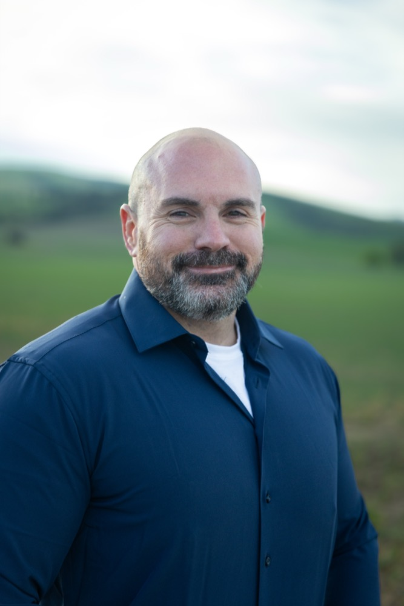

01
Community First
A sheriff's office that belongs to the people it protects. Building trust through visibility, partnership, and genuine service to every neighborhood, farm, and rural corner of Walla Walla County.
A decorated deputy stepping up to lead. Built to restore public safety, back the men and women in uniform, and protect the rural communities of Walla Walla County.

When I was 12 years old, I was lost in the typical middle school haze, with no real idea of what my purpose or direction in life would be. A cold December night that year forever changed that, when a Walla Walla Police Officer showed up at my door and took me for my first ride-along. I was instantly hooked, and it forever changed the trajectory of my life for the better, making me the man I am today.
Following that night, my dad (sorry, Dad, you're retired now, so you're good) would bring home the lists of local officers and their badge numbers. Those lists got posted on my bedroom wall, and I studied them the way a kid studies a sports team roster. I knew every local officer by name, and I counted down the days each year to the local law enforcement Christmas party at Barnaby's, just for the chance to sit in the same room with them.
After graduating from Walla Walla High School, I walked into the United States Marine Corps recruiter's office and told them I wanted to enlist, but I would not accept any MOS other than Military Police. Law enforcement was where I wanted to be. From June 2005 to June 2010, I served as a Military Police Officer, primarily on Camp Pendleton.
Once discharged, and despite other more lucrative opportunities, I returned to Walla Walla, because that is where my heart always was. After testing and waiting a couple of years, I was hired by the College Place Police Department, where I served as a Police Officer from 2012 to 2016. In 2016, I lateraled to the Walla Walla County Sheriff's Office, where I continue to serve as a Deputy Sheriff today.
Throughout my career, I have taken on numerous aspects of law enforcement, including thousands of hours of 911 dispatching, accident and collision investigation, K9 handling, field training officer duties, and more. These experiences have taken me all over the West Coast, working alongside some of the largest and most respected law enforcement agencies in the country, building lasting connections with some of the finest trainers, instructors, and leaders in the field. I fully intend to lean on those connections to help make the Walla Walla County Sheriff's Office one of the finest law enforcement agencies in the State of Washington.
Walla Walla is my home. It's where my heart is, and always has been. I am 100% committed to ensuring that your home and my home are safe, free from harm, and that you have a Sheriff's Office the people of this county can be proud of.
Concrete priorities for the office, not poll-tested talking points. The Walla Walla County Sheriff's Office should be visible, accountable, and trusted in every corner of the county.
A sheriff's office that belongs to the people it protects. Building trust through visibility, partnership, and genuine service to every neighborhood, farm, and rural corner of Walla Walla County.
Leading from the front, not the desk. Ashley has spent years earning the respect of colleagues and community alike. The Sheriff's Office deserves a leader who sets the standard every single day.
Open, honest communication with the public. Clear reporting on crime trends, response times, use of force, and how taxpayer dollars are spent. Citizens deserve the truth, not spin.
High standards for every member of the department, starting at the top. Officers who serve with integrity will be backed. Those who don't will be held responsible. No exceptions.
Getting ahead of crime, not just responding to it. Intelligence-led enforcement, strong coordination with local and state agencies, and a visible presence that deters criminal activity before it takes root, while treating everyone fairly and without bias.
DUI Traffic Safety AwardsSix-time winner of the Traffic Safety DUI Award: 2016 and five consecutive years, 2021-2025.
Military Funerals HonoredCertificate of Commendation for service on the funeral honor team for 25 military services.
FBI LEEDA CertificationsCompleted the full Leadership Trilogy: Supervisor, Command, and Executive Leadership Institute.
K9 Handler CertificationsCertified in narcotics detection, advanced tracking, full deployment, agitation, and decoy work.
Yard signs are how neighbors talk to neighbors. Request a sign for your home, business, or farm and the campaign will deliver. Free for Walla Walla County residents.
Knock doors. Make calls. Plant a sign in your yard. Host a meet-and-greet. Every hour you give brings us closer to election night.
The Daschofsky for Sheriff team reads every message. We will get back to you within 48 hours.